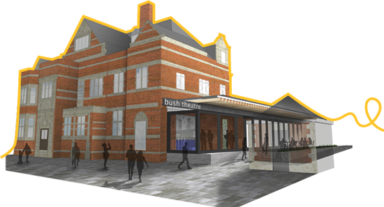

In 2016 the Bush Theatre is undertaking a hugely ambitious £4M project to transform its home and deliver an unrivalled off site season of work within its local community. Over 90% of the funds have been raised but we need your help to reach our target and secure the Bush’s future. We’d love for you to consider supporting this incredible project with some feet up fundraising. Read on to find out more.
Thank you.
Request more info...
Help us to write the next Act of the Bush’s history…
Over 40 years ago the Bush Theatre began life above a pub in West London. From the beginning the Bush has been a ground-breaking new writing theatre, championing world-class new work from voices that see the world from a different point of view. The Bush has always been at the forefront of discovering new talent. It has launched the careers of some of the best writers in the UK and has sustained an international reputation.
In 2011, the Bush Theatre found a much-needed new home in the beautiful old Shepherd’s Bush Library. The Old Library has proved the perfect place to continue the Bush’s mission of making theatre that reflects the world around it, but this remarkable Victorian building needs urgent work to ensure the Bush can continue to grow.
The Project
In 2016 we will carry out a landmark redevelopment- unlocking the potential of this remarkable building and providing audiences, artists and our local community with a 21st Century theatre. During its transformation, the Bush will burst out of the Old Library and present a programme of work in iconic and rediscovered spaces in West London.

Open to all,
accessible to all
We are inspired by the communities that surround us, and we want a theatre that reflects this. A new street level entrance and glass corridor opening on the west side of the building will ensure our building flows from foyer to street.
We’ll also be making our building fully accessible for everyone, with new platform lift connecting all floors and wheelchair ramp leading right into the foyer.
The voices of tomorrow
Key to the redevelopment is a new Studio theatre – which will form a pivotal part of the Bush’s artistic vision. It will be a new home for emerging artists – embedding a generation of writers, performers and creative talent into the fabric of the building.
More and better
Our audiences love the Bush Theatre for its intimacy – and we won’t be changing this. But we will be making the experience more comfortable, and increasing capacity of our theatre by up to 20%.
We’ll also have a redeveloped rehearsal room facility and dedicated technical workshop. Alongside the new Studio – these new and improved spaces mean we’ll be able to work with even more artists and welcome more people to enjoy our work and take part in our Community programme.
Projecting history,
and the planet
We love the Old Library, and are proud to be guardians of this Shepherd’s Bush landmark. We will be carrying out urgent repairs and maintenance to this historic building, alongside green cleaning and restoration work. We’ll also be carrying out a programme of works to make our building greener and more sustainable – including new glazing and a “living” roof.
Breaking out of the Bush… a year of extraordinary work
While the builders are knocking through walls, the Bush will be breaking out from its building and exploring the communities that inspire it. We hope our 2016 season will be remembered as the start of something new. A year where the Bush met new audiences, discovered new voices and shaped the future of British Theatre.
May 2016: Neighbourhood Project
Creating work with our community
June 2016: Boys Will Be Boys at Bush Hall
By Melissa Bubnic, directed by Amy Hodge. Bush Hall
September/October 2016: This Place We Know
A season of plays on the Uxbridge Road
November 2016: The Royale at The Tabernacle
By Marco Ramirez, directed by Madani Younis
Help us to write the next Act of the Bush’s history…
The project has attracted support from Arts Council England, the London Borough of Hammersmith & Fulham, Westfield London, a number of generous trusts and foundations as well as individual donors. Over 90% of the funds have been raised but we need your help to reach our goal and secure our future.
Your support at this historic moment will be transformative and far reaching. It will lay the foundations for the physical changes to the building and support the brilliant artists the Bush will be working with over the next 12 months. Your vision and generosity will also underpin a body of work for our return to the building that will change the national cultural landscape and revolutionise the theatrical cannon of the future.
The Bush Theatre is on a journey. We’d love for you to come with us.
The Bush Theatre is a registered charity no. 270080 and donations can be made in the following ways:
Cheque
Key to the redevelopment is a new Studio theatre – which will form a pivotal part of the Bush’s artistic vision. It will be a new home for emerging artists – embedding a generation of writers, performers and creative talent into the fabric of the building.
Credit/Debit card
or Bank Transfer
Our audiences love the Bush Theatre for its intimacy – and we won’t be changing this. But we will be making the experience more comfortable, and increasing capacity of our theatre by up to 20%.
We’ll also have a redeveloped rehearsal room facility and dedicated technical workshop. Alongside the new Studio – these new and improved spaces mean we’ll be able to work with even more artists and welcome more people to enjoy our work and take part in our Community programme.
Gift Aid
We love the Old Library, and are proud to be guardians of this Shepherd’s Bush landmark. We will be carrying out urgent repairs and maintenance to this historic building, alongside green cleaning and restoration work. We’ll also be carrying out a programme of works to make our building greener and more sustainable – including new glazing and a “living” roof.
Move with us
We commissioned writer and poet Anthony Anaxagrorou to create a poem about the Bush Theatre – past, present and future.